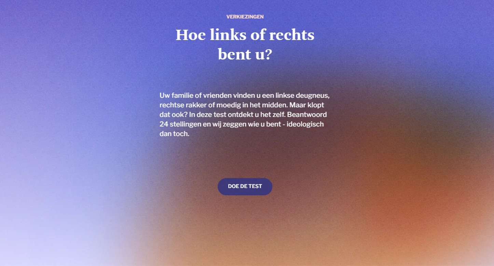
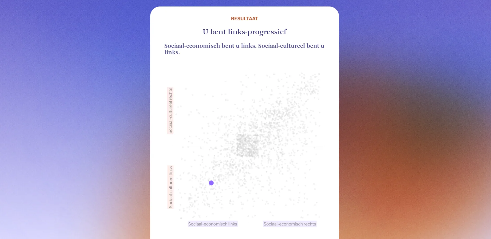
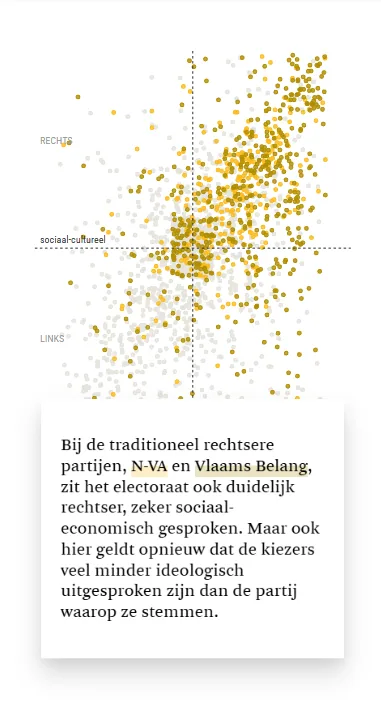
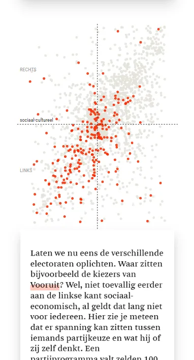

Based on 24 statements, the test calculates your position on two ideological axes and plots you on a scatterplot next to the Flemish parties and more than 4,000 voters.

The results screen then reveals the ideological landscape party by party in scrollytelling: where do the voters of N-VA, Vooruit or Groen sit?

Moving, coloured blobs change colour for each party and fill the background as a visual translation of the political spectrum. The challenge was to make complex research data playful and accessible without losing nuance. The test and visualisations are built in Svelte with D3.js. For the supporting infographics we used Flourish.


Made with
Made by
- Jan-Frederik Abbeloos
- Text
- Tina Boeykens
- Design & development
- Andy Stevens
- Data
- Joppe Rabijns
- Development